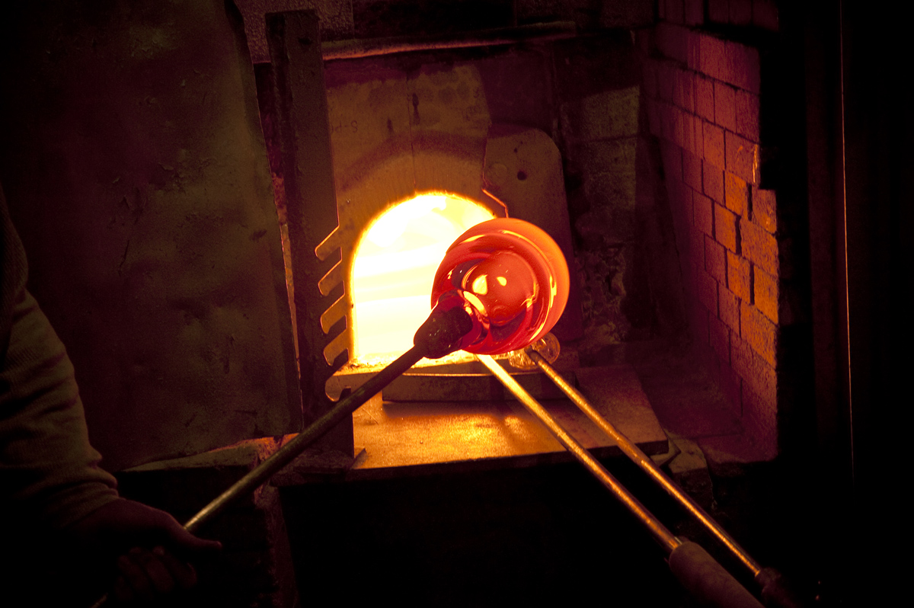
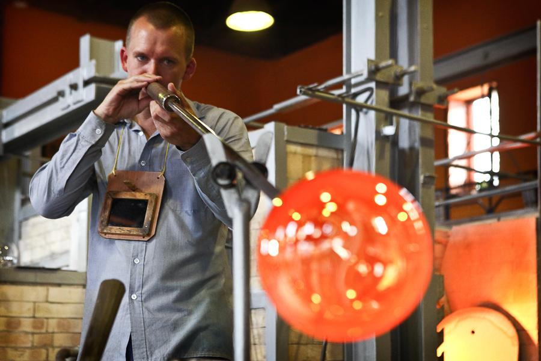
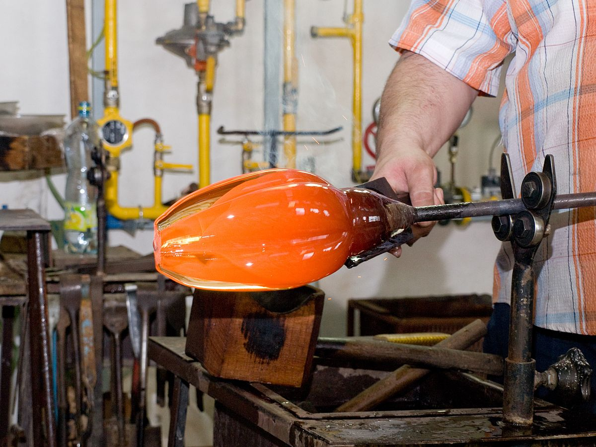
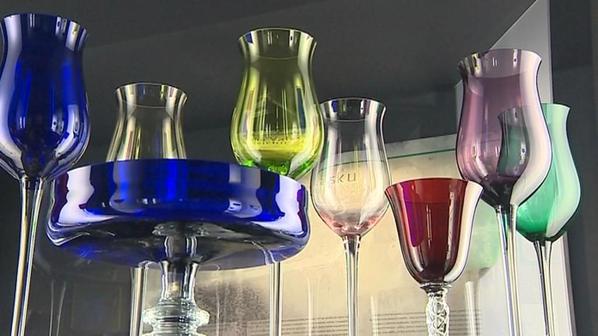

Sklo jako surovina pro výrobu je mimořádně zajímavý materiál. Při jeho výrobě působí rozmanité vnější vlivy a i když se taví podle jednoho technologického postupu, může se nakonec dosáhnout úplně odlišného výsledku. Zatímco jiné suroviny, které lidé od pravěku využívali (dřevo, kámen, hrnčířská hlína) v přírodě existují a pro další využití bylo nutné je pouze upravit, sklo se musí nejprve vyrobit a teprve potom zpracovávat. Objev výroby skla se datuje již doby bronzové jako vedlejší produkt keramické výroby. Nejstaršími výrobky byly korálky. Výroba skla byla vždy tajemstvím, které každý sklářský mistr přísně střežil, ve sklářských rodech se předávalo z otce na syna.
Z hlediska fyzikálního je podstatou procesu výroby skla ochlazování taveniny. Vytváří se tak homogenní, amorfní, křehká, obvykle průhledná hmota. Nejdůležitějšími surovinami jsou sklotvorné látky, které se tavbou míchají a vytvářejí tzv. sklářský kmen. Základními surovinami jsou sklářský písek, soda a vápenec. V současné době se v Čechách sklářské písky těží jen ve třech lokalitách – ve Střelči u Jičína, V Provodíně a Srní u České Lípy. Do namíchaných surovin se přidávají ještě střepy, jejich podíl zlepšuje proces tavby a zajišťuje kvalitnější sklovinu. Při tavení skla je potřeba teplota v rozmezí 1 420 – 1 470°C. doba tavby je několik hodin. Výrobek ze skla se musí po dokončení pomalu chladit, pokud by se ochladil rychle, praskne. Při výrobě plochého, technického, obalového, varného a laboratorního skla převládá automatické zpracování skla, při výrobě nápojového, dekoračního a dárkového má stále významný podíl ruční zpracování.
Nejstarší technikou ze starého Egypta bylo tzv. ovíjení. Na hliněnou formu se navíjela těsně vedle sebe skleněná vlákna o síle několika milimetrů, aby se okraje dotýkaly, nakonec se výrobek znovu nahřál, aby se vlákna stavila dohromady. Výroba skla foukáním je známá z Fénicie, odkud se rozšířila do starověkého Řecka a dále do Říma. Dalším vývojovým stupněm bylo foukání do uzavíracích forem, které dávaly sklu přesný tvar. Při foukání nabere sklář na píšťalu trochu skla a vytvoří baňku. Na baňku jednou či dvakrát nabere další vrstvu skla až má na píšťale dostatečné množství skloviny. Během náběrů sklo neustále uhlazuje a průběžně foukáním zvětšuje vnitřní prostor koule, potom upraví na žádaný tvar, přičemž s píšťalou pořád točí. Foukání skla nevyžaduje extrémně silný výdech, ale pravidelný a regulovaný proud vzduchu. Sklářská výroba většinou vyžaduje spolupráci několika sklářů, je jen velice málo výrobků, které dokáže sklář zhotovit sám, bez spolupráce pomocníků (těžítka, vázičky). Od nejstarších dob se proto ustavovaly sklářské dílny, v nichž měl každý přesně vymezené místo. Nejběžnější počet v dílně pro ruční výrobu jsou tři skláři, nejmladší a nejméně zkušený je baňkář, druhý je foukač a třetí mistr dílny. Drobné výrobky ze skla jako perličky, korálky a knoflíky se zhotovují z předem připravených tyčí různé barvy a průměrů. Ty se pak zpracovávají v malých dílnách a této technice se říká mačkání. Tento způsob výroby je rozšířen hlavně v oblasti Jablonce nad Nisou. Poté, co je výrobek zhotoven na huti se dále upravuje a případně dekoruje. Těmto technikám se souborně říká zušlechťování nebo rafinování
|  |  |  |  |
| Historie volá |
{kind=link}
{kind=link}
{kind=link}
{kind=link}